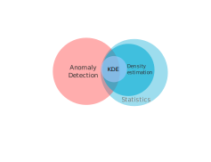
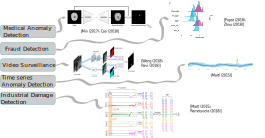
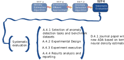
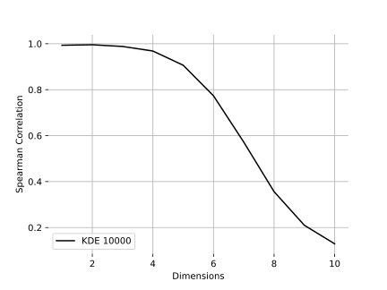
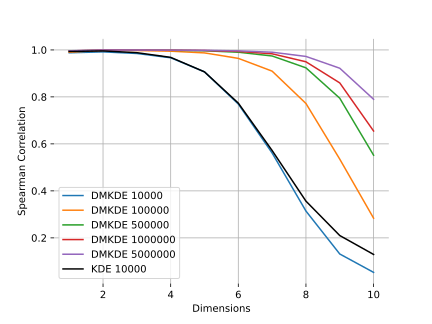
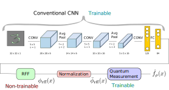
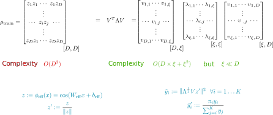
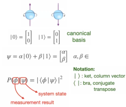

Efficient Non-Parametric Neural Density Estimation and Its Application to Outlier and Anomaly Detection
Joseph A. Gallego M.
Advisor
Fabio A. González O.
Engineering – Systems and Industrial Department – Bogota - Colombia
Background





Density Estimation

- Probability density function (pdf): defines the likelihood of failing within particular range of values from a random variable.
- Density estimation: estimate the pdf from data.
- Two approaches: parametric and non-parametric.
Density Estimation Applications

Kernel Density Estimation

- Non-parametric density estimation method.
- Does not make any particular assumption about the underlying probability density function.
- Unbiased estimator of the pdf.

Kernel Density Estimation Problems
- Inneficient. Memory based algorithm.
- High dimensional data.
- It is not differentiable.
| Phase | Memory | Time |
|---|---|---|
| Training Phase | \(O(N)\) | \(O(1)\) |
| Testing Phase | \(O(N)\) + \(O(M)\) | \(O(NM)\) |
N: number of training points
M: number of testing points
Neural Density Estimation
- Neural networks as density estimation models.
- Two principal approaches: normalizing flows and autorregressive.
- Some models show a better approximation capability in high-dimensional spaces.
Anomaly Detection

- Anomaly is an observation that deviates considerably from some concept of normality.
- Also known as outlier or novelty detection (other terms: unusual, irregular, atypical,).
- It can be solved using supervised, unsupervised or semi-supervised approaches
Anomaly Detection Applications
Anomaly Detection Methods

Ruff, L., Kauffmann, J. R., Vandermeulen, R. A., Montavon, G., Samek, W., Kloft, M., ... & Müller, K. R. (2021). A unifying review of deep and shallow anomaly detection. Proceedings of the IEEE.
Problem Statement
Challenges of density estimation methods
- Efficiency and scalability.
- Simplicity.
- Ability to produce a good estimation of the density.
- Integrability with deep models
- Good for anomaly detection
Problem Statement
| Aspects | Kernel Density Estimation | Neural Density Estimation | Generative Adversarial Networks | |
|---|---|---|---|---|
| Non Memory Based | ✖ | ✓ | ✓ | |
| Simple Model | ✓ | ✖ | ✖ | |
| Training Difficulty | ✓ | ✖ | ✖ | |
| Density Estimation | ✓ | ✓ | ✖ | |
| Differentiable | ✖ | ✓ | ✓ | |
| Good for anomaly detection | ✓ | ✓? | ✓ |
Problem Statement
| Aspects | Kernel Density Estimation | Neural Density Estimation | Generative Adversarial Networks | Ideal Method |
|---|---|---|---|---|
| Non Memory Based | ✖ | ✓ | ✓ | ✓ |
| Simple Model | ✓ | ✖ | ✖ | ✓ |
| Training Difficulty | ✓ | ✖ | ✖ | ✓ |
| Density Estimation | ✓ | ✓ | ✖ | ✓ |
| Differentiable | ✖ | ✓ | ✓ | ✓ |
| Good for anomaly detection | ✓ | ✓? | ✓ | ✓ |
Hypotheses
- It is possible to build an efficient non-parametric density estimation model that combines the simplicity of KDE and the flexibility and integrability of neural density models.
- Using this model for anomaly detection can obtain results that are competitive with state-of-the-art anomaly detection methods.
Research Questions
- (Density Estimation) How to design a nonparametric density estimation method that is efficient in terms of time and space?
- (Density Estimation) How to design a method capable of integrating with other deep learning methods for nonparametric density estimation?
- (Density Estimation) Is the approximation given by the proposed method better in terms of efficiency than the state-of-the-art approximation methods for kernel density estimation?
- (Anomaly Detection) How to design methods for anomaly and outlier detection using nonparametric density estimation?
- (Anomaly Detection) What is the impact of new methods for anomaly and outlier detection using nonparametric density estimation?
Main Goal
To develop a non-parametric method for density estimation that is efficient, can be integrable
with other deep learning frameworks, and can be used for solving anomaly detection tasks.
Specific objectives
- To design a non-memory-based method for efficient kernel density estimation.
- To evaluate the efficiency of the method and to compare it against other state-of-the-art kernel density approximation methods.
- To propose new algorithms for anomaly detection using the new non-memory-based efficient kernel density estimation method.
- To evaluate the model in anomaly detection tasks.
Methodology

Methodology

Methodology

Methodology

Schedule
Progress
Density Matrix Kernel Density Estimation
- An efficient approximate version of KDE.
- Non-memory based.
- Differentiable.
- Two ways of training: optimization free and sgd.
- Based on two main ideas:
- Random Fourier features to approximate the Gaussian kernel.
- Density Matrices to represent the PDF.

DMKDE versus KDE

| Phase | KDE | DMKDE |
|---|---|---|
| Training Phase | \(O(1)\) | \(O(ND^2)\) |
| Testing Phase | \(O(NM)\) | \(O(M)\) |
N: number of training points
M: number of testing points.
DMKDE versus KDE

Mixture of gaussians
\(3^n\) modes
\(3^{10}\) modes = 59,049

DMKDE versus KDE
Mixture of gaussians
\(3^n\) modes
\(3^{10}\) modes = 59,049

DMKDE: Comparison to fast KDE

Juan Felipe Osorio-Ramírez, On the performance of Kernel Density Estimation Using Density Matrices, Trabajo de grado de estadística, Universidad Nacional de Colombia, 2021
DMKDE vs state-of-the-art NDE methods

Liu, Q., Xu, J., Jiang, R., & Wong, W. H. (2021). Density estimation using deep generative neural networks. Proceedings of the National Academy of Sciences, 118(15).
Anomaly Detection: Sklearn Methods vs DMKDE

Related Papers
- Gonzalez, F. A., Gallego, A., Toledo-Cort ́es, S., Vargas-Calderon, V. (2021). Learning with Density Matrices and Random Features. arXiv preprint arXiv:2102.04394.
- (To be submited) Gallego, J. A., Gonzalez, F. A . Neural Density Estimation using Density Matrix and Random Fourier Features
- (In progress) Gallego, J. A., Gonzalez, F. A . Anomaly Detection using Density Matrix and Random Fourier Features
Questions?
Examen de calificación
¿Qué métodos estadísticos se van a usar para medir la eficiencia de la estimación de densidad? ¿Es eficiencia el término adecuado?
- We will measure efficiency and effectiveness.
- Metrics:
- Efficiency: time
- Effectiveness: mean average precision, log mean average precision, spearman correlation, likelihood, log-likelihood.
- Without true density: proxy problem like classification or anomaly detection.
- Metric estimation: cross-validation
- Statistical significance: hypotheses Testing or confidence intervals
- Point Anomalies: If an individual data instance can be considered as anomalous with respect to the rest of data, then the instance is termed as a point anomaly. This is the simplest type of anomaly and is the focus of majority of research on anomaly detection [Chandola et al. 2009].
- Contextual Anomalies:If a data instance is anomalous in a specific context (but not otherwise), then it is termed as a contextual anomaly (also referred to as conditional anomaly [Song et al. 2007]).
- Collective Anomalies: If a collection of related data instances is anomalous with respect to the entire data set, it is termed as a collective anomaly. The individual data instances in a collective anomaly may not be anomalies by themselves, but their occurrence together as a collection is anomalous [Chandola et al. 2009].
- We will measure efficiency and effectiveness.
- Metrics:
- Efficiency: time
- Effectiveness: precision, recall, f1-score, confusion matrix.
- Metrics Estimation: cross-validation
- Hypotheses Testing: statistical significance

- ¿cómo afectaría a la función de pérdida?
Density estimation: (Log-likelihood) \(log(f(W_i, X))\).
Classification: (Categorical Cross Entropy) \(-\sum_{i=1}^{\text{output size}} y_i \cdot \log \hat{y}_i\). - Gradient descent can normally be used as in a neural network, but the RFF layer is not trainable in the case of density estimation.

Risks are associated with the difficulty of reproducing experimental results of baseline methods.
-
Risk 1: Access to datasets
To mitigate this, we will search for open data sets only. -
Risk 2: Does not have access to papers' algorithms
To mitigate we will:- contact authors
- create our own implementations
- focus only on public algorithms
Risks are associated with experimentals setups.
-
Risk 3: issues with experimental reproducibility
To mitigate we will:- contact authors
- report the results even if our results are different from the ones reported
-
Mutual incoherence is defined as:
Let \(\Phi_1\) and \(\Phi_2\) be orthonormal bases for \(R^N\) and let
\[M(\Phi_1, \Phi_2) = \sup \{|\langle \phi_1, \phi_2 \rangle | : \phi_1 \in \Phi_1, \phi_2 \in \Phi_2\}\]
M is a measure of the mutual coherence of two bases. M(Spikes, Complex sinusoids) = \(1/\sqrt{N}\)
Random Fourier Features
Random Fourier Features
- Idea: feature space approximation.
Random Fourier Features
- Idea: feature space approximation.
- Given \( k:\mathbb{R}^d \times \mathbb R^d \rightarrow \mathbb R\)
builds an embedding \( \phi_{\text{rff}}: \mathbb R^d \rightarrow \mathbb{R}^D\)
such that \[ k(x,y) \approx \langle \phi_{\text{rff}}(x), \phi_{\text{rff}}(y) \rangle \]
Random Fourier Features
- Idea: feature space approximation.
- Given \( k:\mathbb{R}^d \times \mathbb R^d \rightarrow \mathbb R\)
builds an embedding \( \phi_{\text{rff}}: \mathbb R^d \rightarrow \mathbb{R}^D\)
such that \[ k(x,y) \approx \langle \phi_{\text{rff}}(x), \phi_{\text{rff}}(y) \rangle \] - Result: learn models involving non-linear kernels using linear methods
Random Fourier Features
- Idea: feature space approximation.
- Given \( k:\mathbb{R}^d \times \mathbb R^d \rightarrow \mathbb R\)
builds an embedding \( \phi_{\text{rff}}: \mathbb R^d \rightarrow \mathbb{R}^D\)
such that \[ k(x,y) \approx \langle \phi_{\text{rff}}(x), \phi_{\text{rff}}(y) \rangle \] - Result: learn models involving non-linear kernels using linear methods
- Test of the time award NeurIPS 2017
Random Fourier Features
Method
- Sample \(\{w_1,\cdots,w_D\} \sim p\text{, }p(w)\) is the Fourier transform of \(k\)
- Sample \(\{b_1,\cdots,b_D\} \sim Unif[0, 2\pi]\)
\[\phi_{\text{rff}}: \mathbb{R}^d \rightarrow \mathbb{R}^D\] \[x \rightarrow \sqrt{\frac{2}{D}}(cos(w_1^Tx + b_1), \cdots, cos(w_D^Tx + b_D)))\] - Based on the Bochner's theorem:
THeorem 1 (Bochner []). A continous kernel \(k(x,y)=k(x-y)\) on \(\mathbb{R}^d\) is positive definite if and only if \(k(\delta)\) is the Fourier transform of a non-negative measure. \[k(x-y)=\int_{\mathbb{R}^d} p(w)e^{jw'(x-y)}dw=\mathbb{E}[\zeta_w(x)\zeta(y)^*]\]
KDE and DMKDE
KDE using RFF: Linear strategy

KDE using RFF: Quadratic strategy

KDE using RFF: Quadratic strategy

KDE using RFF
Density Matrix Kernel Density Estimation (DMKDE)

KDE using RFF
Density estimation converges in probability to KDE estimation

Density Matrix Kernel Density Estimation

Classification with DMKDE
Density Matrix Kernel Density Classification (DMKDC)
Anomaly Detection
Tools
- Let \(\alpha\) be the ratio of the anomaly points
Anomaly Detection
Tools

- Let \(\alpha\) be the ratio of the anomaly points
- When \(\alpha\) is high \(\rightarrow\) supervised learning approach.
Anomaly Detection
Tools

- Let \(\alpha\) be the ratio of the anomaly points
- When \(\alpha\) is high \(\rightarrow\) supervised learning approach.
- However, when \(\alpha\) is low \(\rightarrow\) outlier detection algorithms.
Aplications

Generative Models
Density Estimation

Anomaly Detection
Classification
Anomaly Detection
Sklearn Methods vs DMKDE in Gaussian distributions

Density Matrices
Quantum Mechanics
Brief introduction
- State of a quantum system (QS) \(\psi \in \mathcal{H}\) (vector in a Hilbert space).
- Quantum uncertainty: a QS may be in any superposition of basis states.
- Born rule: probability that a measurement will produce a particular result.

Quantum Mechanics
Example

Density Matrices
Are they useful for statistics and ML?

- A more general model of probability.
- It combines linear algebra and probability
- Probability calculations with linear algebra
Density Matrices
Represent a probability function efficiently
- Categorical distributions: Obvious, but innefficient, not very useful.
Density Matrices
Represent a probability function efficiently
- Categorical distributions: Obvious, but innefficient, not very useful.
- Arbitrary distributions on \(\mathbb{R}^n\):
Not obvious, mixtures of non-parametric probability distributions.
Random Fourier Features
Kernel Methods

- Feature space induced by a kernel function.
Kernel Methods

- Feature space induced by a kernel function.
- High or infinite dimensional embedded feature space.
Kernel Methods
- Feature space induced by a kernel function.
- High or infinite dimensional embedded feature space.
- Problem: efficiency \(O(N^2)\)
\[\textbf{K}= \begin{bmatrix}k(\textbf{x}_1, \textbf{x}_1) & \cdots & k(\textbf{x}_1,
\textbf{x}_N)
\\ & \vdots
\\ \cdots& k(\textbf{x}_i, \textbf{x}_j) & \cdots
\\ & \vdots &
\\ k(\textbf{x}_N, \textbf{x}_1) & \cdots & k(\textbf{x}_N, \textbf{x}_N)
\end{bmatrix}\]
Kernel Methods
Several Methods

- Support Vector Machines
- Kernel ridge regression
- Gaussian processes
- And many more
(nowadays called shallow methods)
Random Fourier Features
- Idea: feature space approximation.
Random Fourier Features
- Idea: feature space approximation.
- Given \( k:\mathbb{R}^d \times \mathbb R^d \rightarrow \mathbb R\)
builds an embedding \( \phi_{\text{rff}}: \mathbb R^d \rightarrow \mathbb{R}^D\)
such that \[ k(x,y) \approx \langle \phi_{\text{rff}}(x), \phi_{\text{rff}}(y) \rangle \]
Random Fourier Features
- Idea: feature space approximation.
- Given \( k:\mathbb{R}^d \times \mathbb R^d \rightarrow \mathbb R\)
builds an embedding \( \phi_{\text{rff}}: \mathbb R^d \rightarrow \mathbb{R}^D\)
such that \[ k(x,y) \approx \langle \phi_{\text{rff}}(x), \phi_{\text{rff}}(y) \rangle \] - Result: learn models involving non-linear kernels using linear methods
Random Fourier Features
- Idea: feature space approximation.
- Given \( k:\mathbb{R}^d \times \mathbb R^d \rightarrow \mathbb R\)
builds an embedding \( \phi_{\text{rff}}: \mathbb R^d \rightarrow \mathbb{R}^D\)
such that \[ k(x,y) \approx \langle \phi_{\text{rff}}(x), \phi_{\text{rff}}(y) \rangle \] - Result: learn models involving non-linear kernels using linear methods
- Test of the time award NeurIPS 2017
Random Fourier Features
Method
- Sample \(\{w_1,\cdots,w_D\} \sim p\text{, }p(w)\) is the Fourier transform of \(k\)
- Sample \(\{b_1,\cdots,b_D\} \sim Unif[0, 2\pi]\)
\[\phi_{\text{rff}}: \mathbb{R}^d \rightarrow \mathbb{R}^D\] \[x \rightarrow \sqrt{\frac{2}{D}}(cos(w_1^Tx + b_1), \cdots, cos(w_D^Tx + b_D)))\] - Based on the Bochner's theorem:
THeorem 1 (Bochner []). A continous kernel \(k(x,y)=k(x-y)\) on \(\mathbb{R}^d\) is positive definite if and only if \(k(\delta)\) is the Fourier transform of a non-negative measure. \[k(x-y)=\int_{\mathbb{R}^d} p(w)e^{jw'(x-y)}dw=\mathbb{E}[\zeta_w(x)\zeta(y)^*]\]
Budget
Budget
| Concept | Source | Cost |
|---|---|---|
| Laptop | Self funded | $9,000,000 |
| High performance equipment | Research group MindLab | $20,000,000 |
| Investigator salary | Self funded | $200,000,000 |
| Advisor salary | Universidad Nacional de Colombia | $192,000,000 |
| Office supplies | Self funded | $1,500,000 |
| Conference travels | Self funded / Universidad Nacional de Colombia | $30,000,000 |
| Bibliography | Universidad Nacional de Colombia | $3,000,000 |
| Total | $455,500,000 |